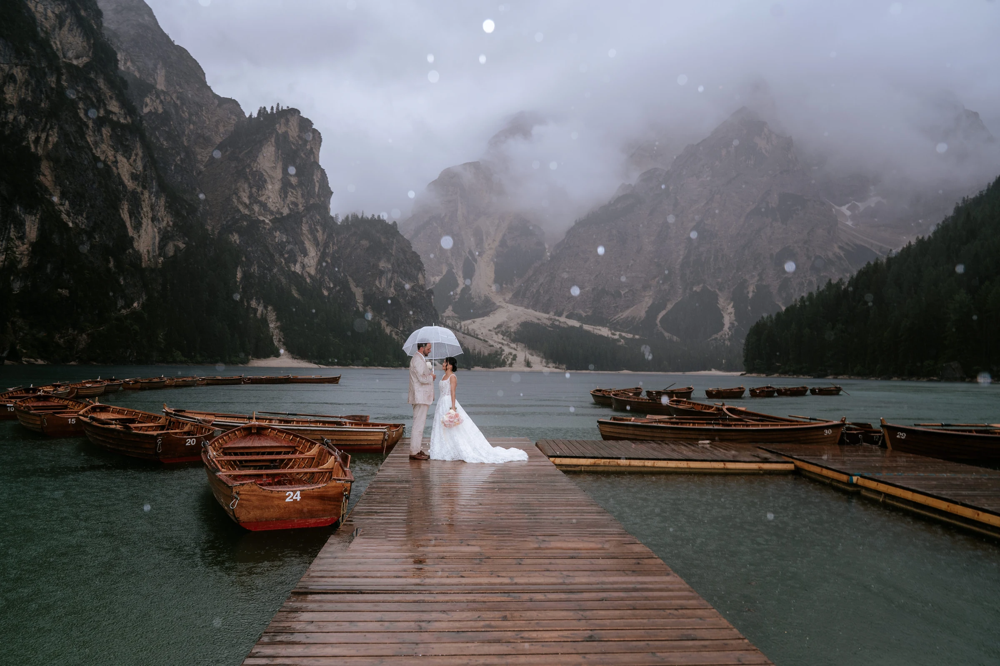
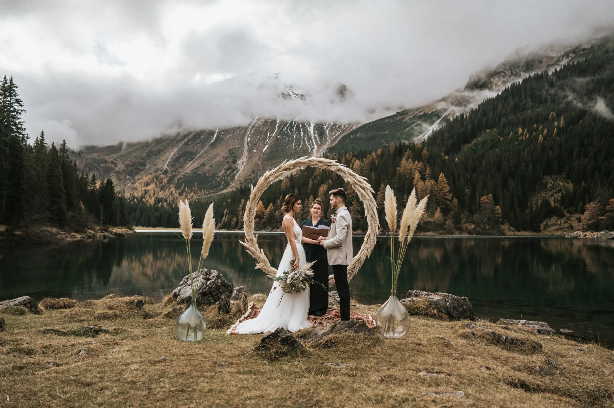
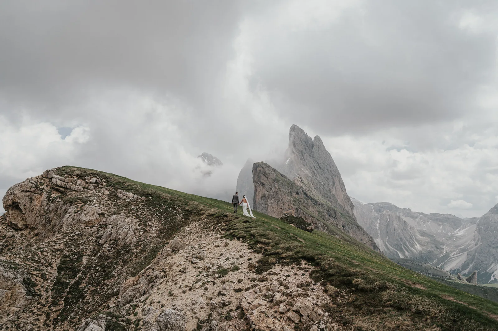
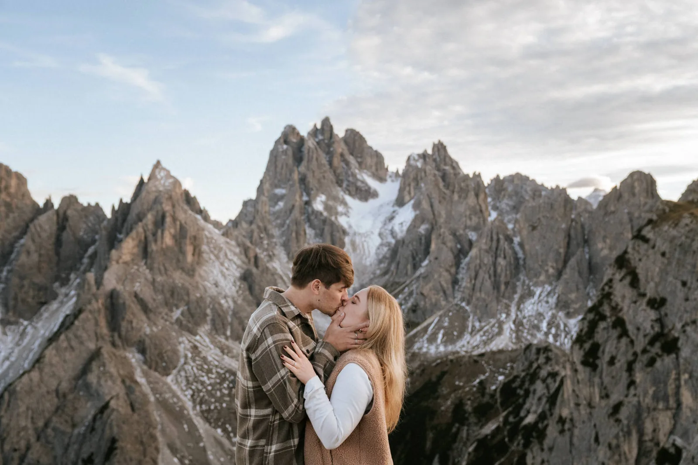
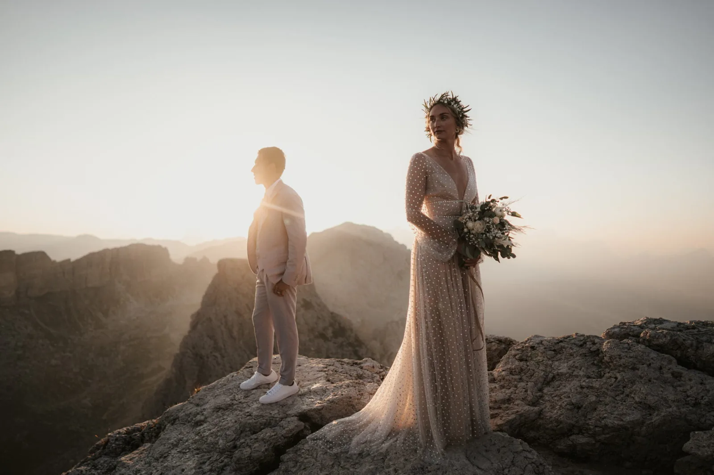
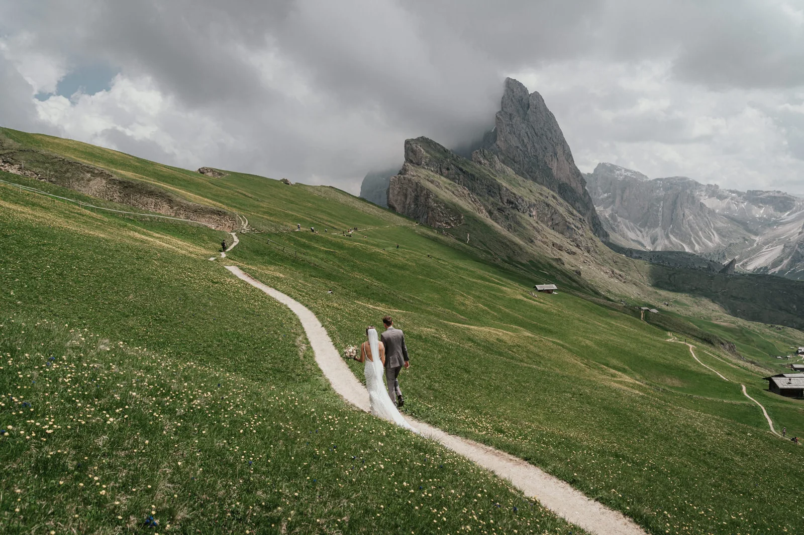

A helicopter turns a multi-day trek into minutes and lands you where the crowds never follow. Here is how a heli elopement actually works, what it costs and what to expect.
You fly from a valley helipad to a remote ledge or glacier, exchange vows with the whole range beneath you, and fly back — often with time for a second location. The flight itself becomes part of the story.
Expect roughly €2,500 upward for the flight, depending on the landing site and time of day. Weather decides everything, so we always hold a flexible window — and a beautiful ground plan B.
A flight opens ground that a normal elopement never reaches: a remote rock ledge, a glacier plateau on the Marmolada, a summit that would otherwise be a two-day climb. Landings are flown by licensed alpine operators to approved sites, usually a short set-down for the ceremony and portraits before the flight home. The flight itself becomes half the story — see it in our helicopter elopement.
The flight is the boldest way up, but not the only one. If you want the summit feeling without the price, a cable car to Lagazuoi, Sass Pordoi or Seceda delivers an enormous view for the cost of a ticket; if you want the day to feel earned, a hike gives you solitude and costs nothing. We often combine them — fly in, walk to a quieter ledge. Weigh the view against the effort in the most beautiful spots, and the budget in how to plan.
Only the weather. If the mountain is closed in, we move the flight or switch to a stunning ground location — you never lose the day.








We use cookies for anonymous statistics (Google Analytics via Google Tag Manager) to improve this site. Analytics runs only with your consent. Privacy Policy